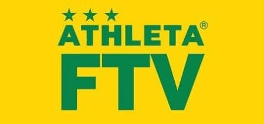
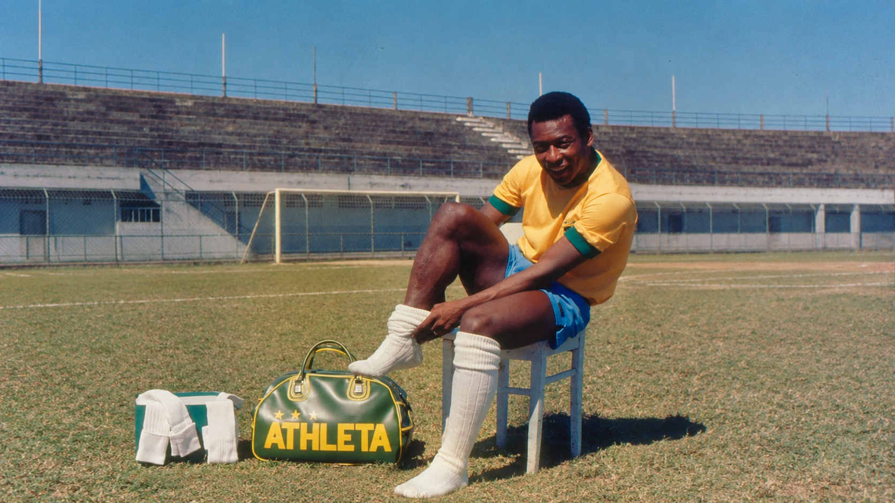

Bem vindo a Athleta.
a loja de artigos esportivos que oferece produtos de alta qualidade para atletas e entusiastas do esporte. Explore nossa ampla seleçao de equipamentos, roupas e acessórios para diversas modalidades esportivas. Compre com confiança e melhore seu desempenho com nossos produtos especializados.

Nascida em 1935 no Brasil, a ATHLETA orgulha-se de participar de momentos importantes na historia do futebol Brasileiro, desenvolvendo e criando os uniformes para a SELEÇÃO BRASILEIRA de futebol campeã dos mundiais de 58,62 e 70. concluindo a parceria nos mundiais de 1974 e 1978. Nosso retrospecto Historial, a ATHLETA também vestiu grandes clubes do cenário do futebol BRASILEIRO. Na década de 60 e 70 vestimos também o REI do Futebol , Grandes craques da época vestiram a marca, alem de Clubes internacionais com grande atuação no mercado europeu..